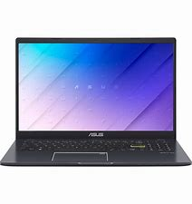

Case Study Between
Google Lens 

Image 1
1. Test Image-
Output on Google Lens: bottle
Output on MobileNet: bottle
Results
Draw
Image 2
2. Test Image-
Output on Google Lens: Laptop
Output on MobileNet: Computer
Results
Google Lens is more accurate
Image 3
3. Test Image-
Output on Google Lens: flower
Output on MobileNet: pink flower
Results
MobileNet is more accurate
Image 4
4. Test Image-
Output on Google Lens: Blue Car
Output on MobileNet: car
Results
Google Lens is more accurate
Image 5
5. Test Image-

Output on Google Lens: white bear
Output on MobileNet: polar bear
Results
MobileNet is more accurate
End Results
By examining the results, we conclude that Google Lens and MobileNet are equal in identifying the images